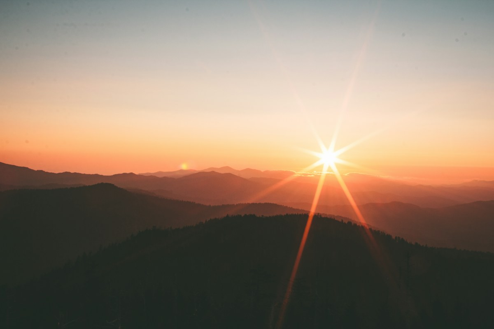
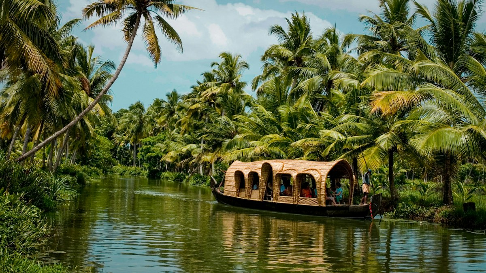
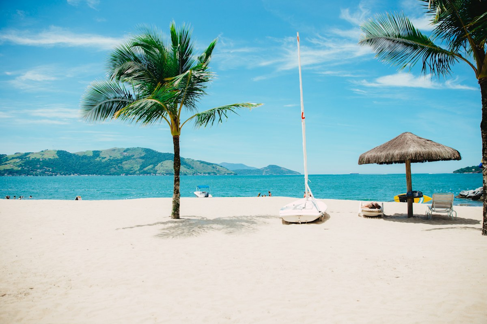
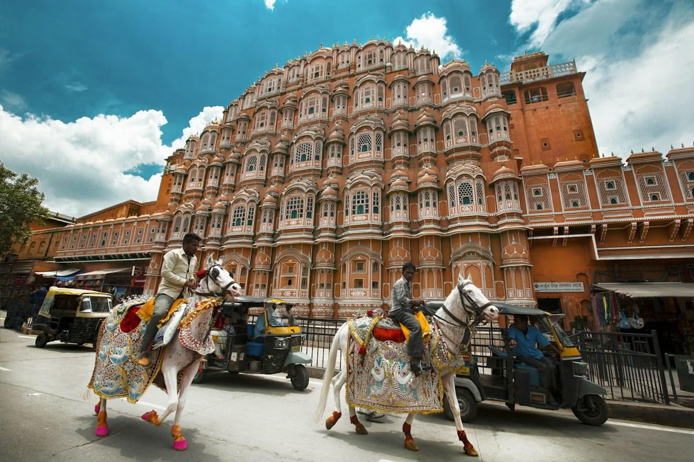
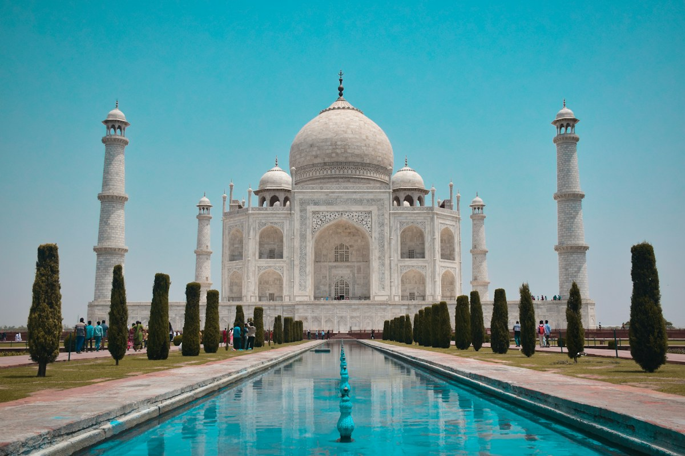
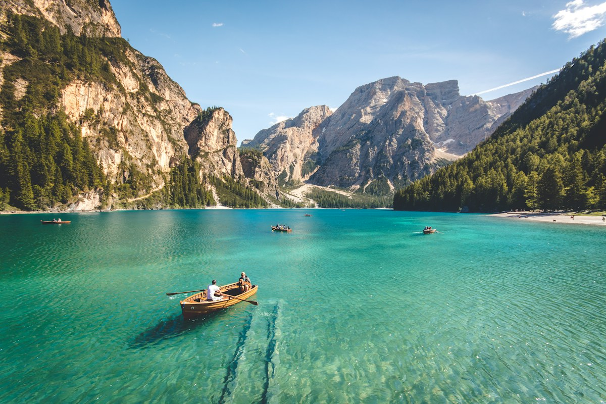
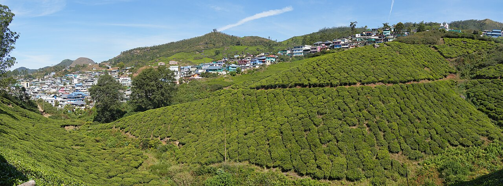
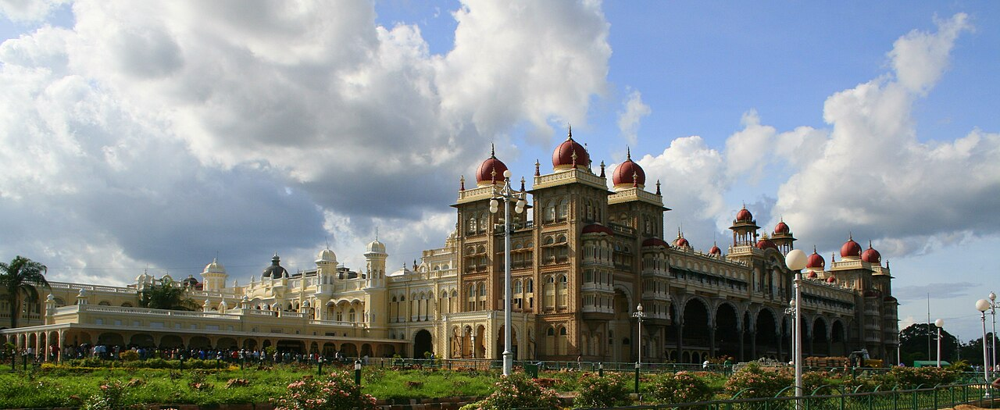

Popular Indian Destinations
From misty hill towns to monumental landmarks, these places are a wonderful starting point for your India itinerary.

Sunset over Ooty's Nilgiri Hills
Tamil Nadu · Hill station
Ooty
Known as the Queen of Hill Stations, Ooty welcomes visitors with cool weather, tea gardens and mountain views.
Worth knowing: The Nilgiri Mountain Railway is a memorable way to see the region's changing scenery.

Kerala's palm-lined backwaters
Kerala · Backwaters & nature
Kerala
Kerala is celebrated for its tranquil backwaters, tropical greenery, beaches and distinctive cuisine.
Worth knowing: A locally operated houseboat or canoe trip offers a slower view of village life along the waterways.

Golden sands along the Goan coast
Goa · Beaches
Goa
Goa pairs a beautiful Arabian Sea coastline with colourful markets, Portuguese-influenced architecture and a relaxed pace.
Worth knowing: Explore beyond the busiest beaches to find quieter villages and historic neighbourhoods.

Hawa Mahal, the Palace of Winds
Rajasthan · Heritage city
Jaipur
Rajasthan's capital is known for rose-coloured buildings, grand forts, artisan workshops and vibrant bazaars.
Worth knowing: Jaipur is part of India's famous Golden Triangle with Delhi and Agra.

The Taj Mahal in Agra
Uttar Pradesh · Historical place
Agra
Agra is home to world-renowned Mughal architecture, including the Taj Mahal and the impressive Agra Fort.
Worth knowing: The Taj Mahal changes in appearance with the light, so an early visit can be especially rewarding.

Mountain scenery around Manali
Himachal Pradesh · Mountain escape
Manali
Surrounded by Himalayan landscapes, Manali is a base for scenic walks, river valleys and mountain adventures.
Worth knowing: Weather and road conditions can change quickly at altitude; check locally before setting out.

Rolling tea plantations in Munnar Photo: Ingo Mehling / Wikimedia Commons, CC BY-SA 4.0.
Kerala · Hill station
Munnar
Munnar's cool mountain air, rolling tea plantations and forested slopes make it a peaceful nature retreat.
Worth knowing: The region is known for biodiversity; follow marked trails and observe wildlife from a respectful distance.

Mysore Palace Photo: Hari R / Wikimedia Commons, CC BY 2.0.
Karnataka · Heritage city
Mysore
Mysore, also called Mysuru, is admired for its royal palace, historic markets, silk and sandalwood crafts.
Worth knowing: The city is especially lively during Dasara, its celebrated annual festival.

.jpg){kind=link}